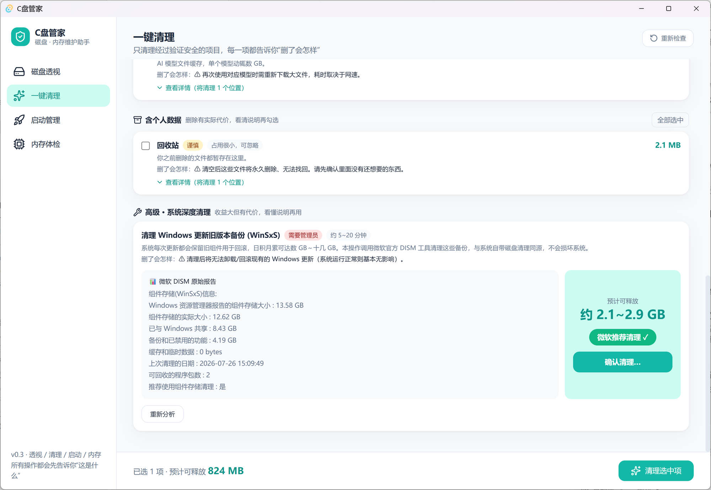
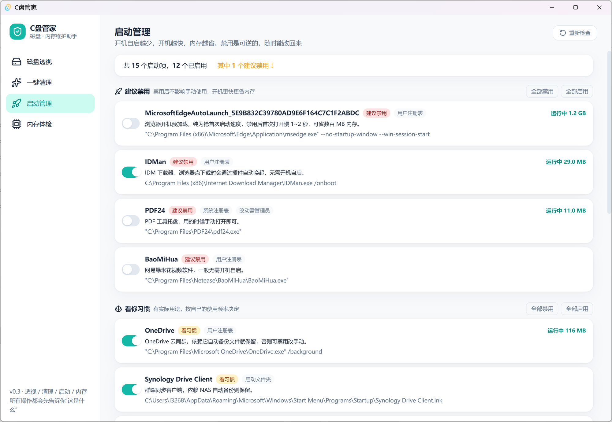
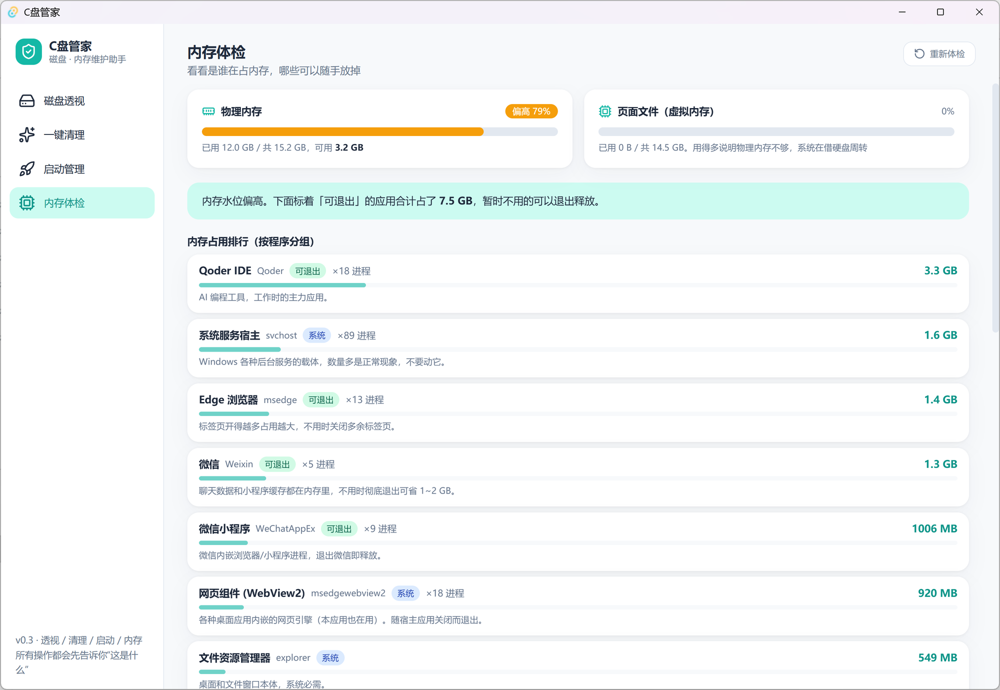

🤔为什么做这个？
C 盘又红了。你打开某款"清理大师"，它尖叫着"发现 3247 个垃圾！你的电脑危在旦夕！"——然后趁你慌乱，装上三个全家桶。
你去问懂电脑的朋友，他甩来一个专业工具和一句"自己看"。满屏英文路径，你不知道 WinSxS 是干嘛的，更不敢删。
你去问懂电脑的朋友，他甩来一个专业工具和一句"自己看"。满屏英文路径，你不知道 WinSxS 是干嘛的，更不敢删。
C盘管家选择第三条路：把你当成年人。
每一项操作都先回答：这是什么？为什么占空间？删了会怎样？
每一项操作都先回答：这是什么？为什么占空间？删了会怎样？
💎它凭什么让你放心
| C盘管家 | 某些"清理大师" | |
|---|---|---|
| 安装包体积 | 2.4 MB，Rust 原生 | 100~300 MB |
| 联网行为 | 零网络请求，不上传不统计 | 云端"分析"你的文件 |
| 广告 / 弹窗 | 没有，永远没有 | 右下角惊喜不断 |
| 后台驻留 | 关掉就是关掉，无守护进程 | 三个常驻服务互相拉起 |
| 删除逻辑 | 白名单强制，想越界删都做不到 | 删了什么天知道 |
| 代码 | 全部开源，每一行可审计 | 黑箱 |
🦀 为什么是 Rust？内存安全由编译器保证，并行扫描全盘只要十几秒，运行占用只有传统工具的零头——安全和轻快，不必二选一。
✨四大功能
🗺️ 磁盘透视 —— 看清每一寸空间被谁占用
磁盘占用画成彩色拼图，点击色块层层深入。色彩即语义：🔵系统 / 🟣软件 / 🟠缓存 / 🟢个人文件，
配合 90+ 条中文软件知识库（剪映、微信、百度网盘、npm、conda……），每个目录都用人话告诉你"这是什么、能不能动"。

🧹 一键清理 —— 三层策略，只清该清的
- 🗑️ 垃圾残留：临时文件、更新包残留——删了纯赚，默认勾选；
- ⚡ 性能缓存：npm、浏览器、IDE 索引——空间充足时我们会劝你留着，这是别的清理软件不会说的实话；
- 📦 含个人数据：回收站、下载断点——永不默认勾选，看清说明再动手。
每一项都能展开详情，将被清理的每个具体路径白纸黑字列出来——界面显示的，就是实际执行的。

🔧 系统深度清理 —— 先分析，后动手
Windows 更新旧备份动辄十几 GB。调用微软官方 DISM 工具分两步走：
先只读分析，大字告诉你能清多少、微软是否推荐；你确认了才真正执行。与系统自带清理同源，不碰第三方黑科技。

🚀 启动管理 + 🧠 内存体检
自启项标注真实路径、内存占用和"建议禁用 / 看你习惯 / 建议保留"，开关可逆；
内存大户按程序分组排行，谁在吃内存一目了然。


📜五条设计原则
1
用户知情权优先——讲清作用对象、原理、影响，禁止恐吓式文案；
2
保守安全——白名单强制、个人数据永不默认勾、高危操作两步式确认；
3
数据诚实——"扫描于 5 分钟前"就是 5 分钟前，绝不装实时；
4
隐私即默认——一切分析在你的电脑本地完成；
5
说人话——1.5 GB，而不是 1610612736 字节。
这个项目源自一次真实的 C 盘救援：
从剩余 46 GB 清出 80+ GB 之后，
我们把整套分析经验和安全边界，做成了这个 2.4 MB 的小工具。
从剩余 46 GB 清出 80+ GB 之后，
我们把整套分析经验和安全边界，做成了这个 2.4 MB 的小工具。
如果它帮到了你，点个 ⭐ 就是最好的支持。